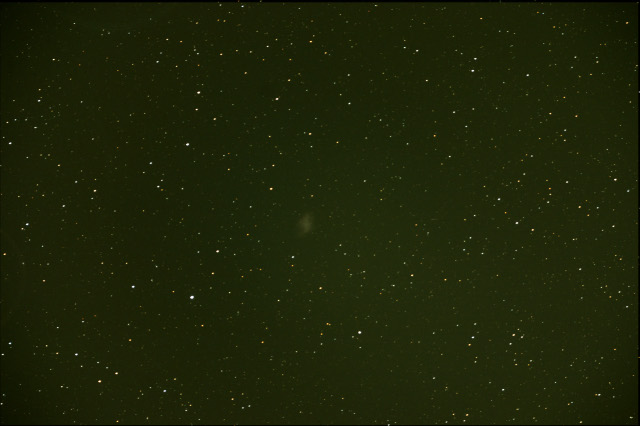
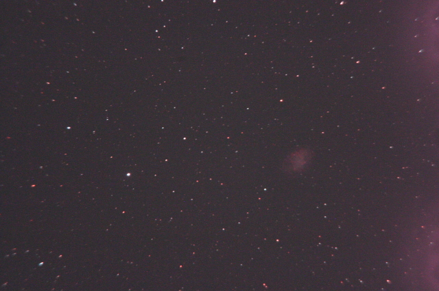
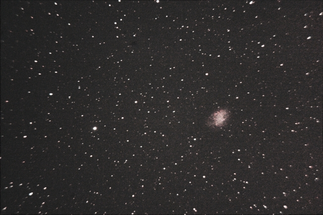

Krebsnebel M1
Der 6300 Lichtjahre entfernte Supernovaüberrest M1 (Crab Nebula) mit der schwachen Helligkeit von 8,4 mag wurde in der gleichen Beobachtungsnacht wie M42/M43 mit der Canon EOS 300D aus Praunheim/Frankfurt aufgenommen.
Weitere Infos auf der Wikipedia - Seite über M1


Hier ein aktuelles Bild mit 360 s Belichtungszeit, ISO1600, Canon 300D mit Astro-Filter (IF-Filter ausgebaut), und Nebelfilter für Stadtlicht-Sperrung, an Vixen Refraktor mit 2x Barlow, Autogeguided mit Meade LPI, Aufnahmesoftware DSLR Focus.
Von Frankfurt aus am 11.3.07, aufgenommen von Klaus & Daniel Veltum.
Hier nochmal Bilder aus einer anderen Beobachtungsnacht, diesmal mit Nebel-Filter:
